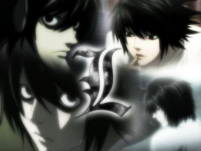
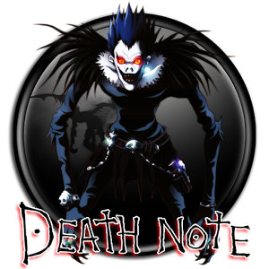

夜神月

出生1986年2月28日，死亡2010年1月28日，身高179cm，体重54kg，血型A。17岁，私立大国学园高中三年级学生。拾到死亡笔记后，以“KIRA”的身份杀害罪犯，梦想创造没有犯罪的世界。因造成大量罪犯死亡，而引起侦探L的调查，成为奇拿嫌疑犯之一。
L
真名L.Lawliet，出生1979年10月31日，死亡2004年11月5日。维美斯之家出身，拥有世界三大侦探所有称号。因KIRA事件，而首次露面。
琉克
由于忍受不了死神界的无聊，便把死亡笔记遗落在人间。对人类没有任何特别感情，所以对依附的人类夜神月的犯罪活动也只是旁观，享受事态发展。